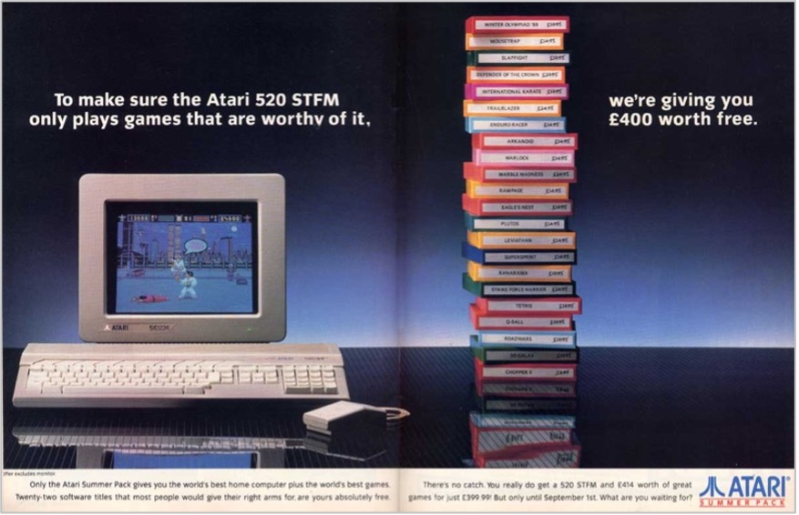

Chapter 1. Demos as Cultural Heritage
At the start of 2020, activists from the Art of Coding initiative made a remarkable effort to list the demoscene as the first digital culture item on UNESCO's list of Intangible Cultural Heritage.
Two related but independent efforts in the demoscene showed the first successes. In April 2020, an initiative in Finland successfully achieved the inclusion of the demoscene on the federal Ministry of Education and Culture's proposals from the National Board of Antiquities and the Intangible Cultural Heritage Expert Group as national cultural heritage of humanity (together with eleven other cultural practices).[17]
On their website, Andreas Lange and Tobias Kopka, the initiators of the campaign Art of Coding, describe the mission of their initiative as:
"The Demoscene, which is born at the heart of the home computer revolution, has been showing how skills and creativity can be stimulated and implemented in a dynamic cultural practice adopted to digital contexts. Many of its techniques and mindsets became core techniques and influences of the digital change and are still vibrant today. Seven decades after the invention of computers we think it's time to push for the next step to take born-digital culture seriously as part of our cultural heritage, starting an initiative to bring the demoscene onto the list of the UNESCO intangible world cultural heritage. So we invite all sceners and non-sceners to join us and support the initiative in the upcoming years."[18]
Together with the increased interest of research in the field of Media Art Histories, the initiative's success in Finland so far is an official legitimization of the demoscene as inherent digital art and digital culture. While demos are a part of the larger area of media art and digital arts, only the well-connected and networked nature of the demoscene has made it possible to promote them specifically as the very first digital culture to be considered for inclusion on the UNESCO list of Intangible Cultural Heritage.
Barely a week after the success in Finland, the Art of Coding initiative in Germany (represented through the Cologne-based Digital Kultur e.V.) successfully nominated the demoscene as a digital cultural form of heritage in the most populous German province of North Rhine-Westphalia. This is one of the necessary steps for a nomination to proceed on a federal level and, following that, an official request by the Federal Republic of Germany to UNESCO.[19][20]
These official acts of legitimization come from the established mainstream culture. The demoscene has been and will continue to be one of the many engines of a much larger movement: the open-source software (OSS) movement. It is not an inherent requirement for demo-makers to share code and the "secrets" of the hacks used to achieve certain effects or break specific limits, but it has become a common practice in the demoscene. Many share their code on the version control service Github (https://github.com/topics/demoscene) under a Creative Commons license so that others can not only learn from and appropriate it, but also marvel at its ingenuity.
The ethos of early demo-makers anticipated the later open-source movement, with the idea that the machine they own should be completely controlled by the developers and all its capabilities should be discovered and used.

Figure 6: Atari STE Demo Sea of Colour - Dead Hackers Society. 2015. (Source: https://youtu.be/1hvFiv2hpYE )
1.1 Demos as Part of Computer History
Demos and the demoscene are part of home computer history. In contrast to the top-down approach of computer science stemming from industry and academia, demos exemplify the grassroots approach of the home computer revolution. When the home computer democratized access to information processing technology in the late 1970s and early 1980s, they delivered a completely new instrument to the households of the day.

Figure 7: Atari 520ST (Source: http://oldcomputers.net/atari520st.html )
With the right software, interested users could compose professionally typed letters in a word processor, create business graphics, balance their checkbooks, and do many other tasks that would have required help from others. Furthermore, they provided entertainment with their games. There were shoot 'em up games, text adventure games, martial arts fighting games, jump-and-run games, gambling games, and many more. But all of these had to be purchased in addition to the computer.
In the early 1980s, these affordable home computers did not do much by themselves, except for one thing, one very important thing: Users could program them. To this day the fact that a user can develop programs using their computer is the distinguishing feature between a general-purpose computer and a closed, curated system like a smartphone or a games console (see 4.6 Computing Since the Days of The Exceptions for more on the current day perspective).
Up until the mid-1980s, most home computers came with a version of the programing language BASIC built into their read-only memory. This slow but easy-to-learn language gave early users their very first taste of programming. And more, they gave them the first empowering experience of getting things done on a computer. They could write their own programs to manage recipes, a wedding guest list, and to crunch numbers for a puzzle game or anything else they could think of and had the time to program.
They were only limited by their imagination—and by the technical limits of the early home computers. And these limits were very restrictive. Home computers were equipped with very little memory, even by the standards of the day. They had limited sound and music capabilities. Their graphics were restricted in the number of colors they could display and the screen resolution they could render images in. These limitations were a necessity to keep costs down and make the machines affordable to buyers who, at the time, only had a vague idea of what they might even do with this new class of device.
Some users learned to write programs that pushed the limits of these computers. They graduated from BASIC to other programming languages—some even to the more processor native assembler language. Some coders even found ways to exceed the limitations, to break them and make the computer display graphics and produce music or sound effects that even the manufacturers had not thought possible. They demonstrated what their machines were capable of, and they demonstrated what they were capable of as a programmer.
These few talented developers, usually hobbyists, were not satisfied with knowing all the capabilities of their computers and how to program them. They knew that, in the right hands, the hardware was more capable than was apparent. They used programming tricks and the most precise timing in the hardware processing cycles to conjure effects that even experts thought impossible. And these developers wanted to demonstrate their skills. They created demos with real-time graphics whizzing across the screen, sampled sounds and multichannel music pulsating out of the speakers, and special effects that looked like they would make the hardware melt.
These developers created demos.
This is their story, the story of the coders from the demoscene that shattered the technical limits of home computers.
1.2 "The Desire to Do the Impossible": Demos as Digital Folklore
In his 2008 talk at the "Hack Act Interact Progress" (HAIP) festival in Slovenia, Anders Carlsson (aka Goto80) argues that the early demoscene lived and acted by many of the principles that were only later formally defined by the open-source movement.[21] The reason for this was that many of the demo-making developers later becoming part of the open-source movement. One should not underestimate the fact that many of the open-source movement's principles are objectively quite sound and practical in endeavors of non-profit-oriented networking and collaboration. Sharing knowledge and code achieves more sustainable results in the long-term than being secretive about knowledge and keeping source codes away from people who could learn from them and even improve them.
In his effort to put the demoscene in a context, Ville-Matias Heikkila answers the question of whether the demoscene is open-source with three arguments (comments in brackets by Heikkila, quoted directly from Ville-Matias Heikkila's 2009 article Putting the demoscene in a context[22]):
- global unrestricted peer-to-peer sharing of digital data (albeit originally primarily with snailmail instead of electronic telecommunications)
- creating music and other types of art primarily or even exclusively for free non-g digital sharing (I think this is quite obvious)
- using elements taken from video games and other creative digital works in one's own creations (ripped game music in demos was commonplace in the early years, as was sample-ripping slightly later)
Fascinatingly, there is a large overlap with practices of early rap/hip hop music and sound sampling culture.[23] Appropriating pieces of music by sampling and remixing them in a new and different context with other pieces of music that are either wholly original or themselves also appropriated from other sources is commonplace.[24]
On the one hand, this can be regarded as a form of rebellion against the establishment and the law with the arguably victimless crime of copyright infringement, very much the territory of youth culture over the decades.[25] On the other hand, it is a cultural practice going back millennia: the oral tradition of telling and retelling folk stories and fairy tales, reinterpreting known melodies, changing the lyrics of songs, appropriating classical literary works, and adapting them to a different medium, changing them in the process.[26] [27]Perhaps, the human activity of learning behaviors as well as acquiring new knowledge is an act of imitation on the outset that propels the mind into a new gear and gradually jettisons imitation in favor of true understanding and creativity.
Anders Carlsson (Goto80) argued in his talk at HAIP that demos are craft and not art because they are made to show off and win a competition. This holds true for parts of the current-day demoscene that develop demos to compete at demo-parties. There is no way to overstate the massive impact that demo-parties have had on the creation of demos, the cohesion of the scene, and the innovations achieved in a few short days of getting together. But demos can be created completely outside of demo-parties. They do not need to be created to win a competition. And even if so, a significant portion of today's output in the mainstream arts is created in competitions, be that architecture, film, or music competitions. And to be fair, showing off was always one of the many motivations to create art. This makes it hard to disqualify demos as art just because they were created to show off.
Anders Carlsson modifies his argument in his article The Working Class of Computer Art?, in which he interestingly finds vital similarities.[28]
"What artists and sceners share though is the desire to do the impossible. There is an obsession with transgression in the new media art world too (going beyond the 'system'), but the demoscene is so much ahead of everybody else that nobody gets it."
Carlsson calls it "transgression," while some demo-makers would call it shattering the limits. He then compromises by saying:
"I think that the scene is interesting to art people too. Interesting. But not relevant" and "Demos are more like folk culture, than 'high culture.'"
He finally resigns by remarking:
"The demoscene is the eternal underdog of computer art"
And he describes the low-level work done by sceners in the technology sector that directly benefits media art production. Accordingly, the demoscene is the:
"working class of art."
In the comments to Carlsson's article, artist and demo-maker Dragan Espenshied makes the argument:
"The difference between art and the demoscene is mostly that art contextualizes itself outside of the scene of artists. Art strives to be meaningful beyond itself."[29]
To this comment, Anders Carlsson replies:
"Couldn't it be argued that new media art has the same kind of problematic relationship to art, as the demoscene has to new media? There was a small hype for computer art/music in the 60's but in the 70's it cooled off and in the 80's it became commercial ... Media art still hasn't been accepted and normalized into the art world, and tends to talk too much about technology."
One can conclude the discussion by saying that demos are art; they might not be high art or part of the established art community. This makes them digital folk art, digital folklore. Like media art, they are held back by constant discussions about technology. This bores a mainstream audience because they cannot find any points of identification or societal relevance. Contrarily, there is a niche audience of the demoscene itself that revels in technical details and wants to talk about technology.
In the demoscene, the discussion about technology is not about its ethicality, it is about the process and the techniques used to achieve certain results and effects.

Figure 8: Atari STE Demo Pacemaker by Paradox. 2005. (Source: https://youtu.be/0TMJFF2BHi4)
1.3 Online Collections of Demo Art
The demoscene is around forty years old. These are forty years of intros, cracktros, and demos on dozens of historic computer systems, ranging from the early days on the Apple II in the late 1970s to the sheer explosion of the home computer revolution in the 1980s with machines such as the Commodore 64 in the USA and mainland Europe, the Sinclair ZX Spectrum, BBC Micro and Amstrad CPC in the United Kingdom, and the venerable Commodore Amiga in the UK, Germany, and the Scandinavian countries.
There are a large number of archives and collections like the pulsating scene around the Sinclair ZX Spectrum at http://zxdemo.org, but the most valuable resources on the internet for actual demos are the two largest demo archives (http://www.pouet.net and https://demozoo.org).
The first of the two, the French pouet.net, acts as the demoscene's memory, listing and archiving historic and "old school" demos on legacy systems like the Commodore 64, the Atari 8-bit line, and, of course, the dynamic duo, the Commodore Amiga and the Atari ST, among many others. Pouet catalogs historic demos, providing dates of creation and the memory footprint of the demos. Where possible, you can download the original executable files and even provide links to recordings of the demos on YouTube.

Figure 9: The "oldskool" demo archive at http://www.pouet.net. Left, the homepage, right, a demo detail page
Demozoo is a site that features an archive of demos on modern systems in the active demoscene; it is the archive of current practice. Demozoo provides information and downloads, as well as links to the web locations of the demo-groups that created the demos.

Figure 10: The Demozoo archive at https://demozoo.org. Left. the homepage, right, a demo detail page
This 8-bit machine was released in 1982 by Sir Clive Sinclair to be as cheap as possible. It has a number of interesting limitations. Not only its ridiculously limited memory, but it's also color restriction of only two colors for each 8 x 8-pixel block and sound beeper that sounds offensive in the wrong hands.

Figure 11: The files section of scene.org at files.scene.org
The wildly popular Commodore 64 (also released in 1982) probably has the most active demoscene for an 8-bit computer. Its dedicated graphics hardware with sprites and hardware scrolling are among its great strengths, but the sensational Sound Interface Device, or SID, sound chip is, to this day, a favorite among demo music and chiptune creators. The archive of C64 demos can be found at http://www.c64.ch/demos/. There are many more resources and collections of demos, including the MSX scene in Japan, the Eastern European demoscene around the Atari 8-bit line (XE/XL), and the ZX Spectrum-clones and imitations that were produced in the twilight years of communism in the late 80s.
Another great resource of a different kind is the source code repositories of demos on Github at https://github.com/topics/demoscene. These repositories not only store the executables of hundreds of classic demos but also the original source code for many of them. The original source code of The Exceptions' demos is available on Github at http://github.com/ggnkua/Atari_ST_Sources/tree/master/ASM/The%20Exceptions. This is part of a larger effort to preserve the source code of Atari ST applications and demos.
These demo-archives are a great effort in storing and thus salvaging demos. They are very sparse in describing and analyzing the demos. There is a need for an archive that aims to encourage academic research and scholarly analysis of demo art in media art history. The appendices of this thesis will discuss and propose how to create an academic archive of demo-art and its related media.
Finally, the two ever-present general resources for computing history are the Wayback machine - this diligent part of http://archive.org that freezes bits of the internet in amber so that we may look back at what is no longer available on the web. And finally, an attempt to distill some of net culture's early days is at http://textfiles.com.
1.4 Demo-groups and Their Computer Systems of Choice
This master thesis focuses on computer demos on the Atari ST computer system, which was released in late 1985 but only found wide distribution in 1986 and beyond.
It was the Atari Corporation's first foray into the market of 16-bit home computers. Atari was among the pioneering manufacturers in the late 1970s and early 1980s with its 8-bit video game consoles and line of computers but had lost its lead in the consumer home market to Commodore and Apple. The Atari ST would introduce 16-bit computing to the masses. As then-CEO of Atari Jack Tramiel put it: "A computer for the masses, not the classes."[31] Atari's Tramiel also proudly proclaimed that the ST delivered "Power without the price."[32]
When the Apple Macintosh came with 512 kilobytes of RAM at close to $3000 USD, the IBM PC could not be expanded beyond 640 kilobytes yet still cost nearly as much. The larger model of the original Atari ST, the 520ST+, was the first computer with a megabyte of RAM that retailed for $1000 USD. Each kilobyte of RAM cost only a dollar.
After numerous less successful revisions, Atari retired their ST line of computers in 1993. Around this time, Atari left the home and personal computer market to focus on its video game efforts.

Figure 12: Advertisement for the Atari 520STFM with an integrated floppy disk drive and TV connector. (Source: http://www.atarimania.com/list_ads_atari_page-_59-_S.html)
1.5. What Are Limitations?
Limitations are external to art and to the artist. Not everyone who pursues an endeavor may encounter these challenges. Rather, they are restrictions imposed by the laws of nature, the laws of a country or government, or technical limitations.
They are the color that you need but cannot find, the sound you hear in your head but cannot produce with the instruments you have. They are the thoughts you want to express but are silenced by authority. They are the space you need to create but cannot find.
Limitations are much more concrete where computer demo art is concerned. Particularly, in the early days of the home computer revolution, computers were not very capable. They had memory restrictions, displayed their graphics in strange ways, and produced unappealing sounds. It took an artist, programmer or musician who really knew how to handle the hardware limitations to conjure beauty out of the machine.
In conclusion, the demoscene has instrumentalized limitations as a means to generate creative solutions and as a motivation. They have "weaponized" an aspect of human ingenuity: To see a set of limitations and at first be taken aback, say they are impossible to overcome, but then through hard work, creativity and sometimes blind luck, nevertheless find means to overcome the limitations or – in the least – make them no longer matter.
1.6 Intros, Cracktros, and Demos: The Digital Graffiti of the 1980s
Computer demos evolved out of the cracker and software pirate scene. If you wanted to pirate a copy-protected game or application, you needed to remove the copy protection. This was no trivial task, and it became harder and more complicated over the years as software publishers invented ever more sophisticated protections.
Crackers who had successfully removed the copy protection on a piece of software were proud of their achievement—they wanted to boast and sought out the recognition that they had bested large software makers. Hence, they added screens to the games showing off their pirate handle, their codename. Of course, the crackers did not use their real names. Over time, the intro screens started to become elaborate. They evolved into graphics screens accompanied by music, boasting and bragging about how the crackers had "stuck it to the man." The "man," of course, was the commercial software producers and game publishers who would do their best to protect their commercially distributed software from copying and to actively prevent what the crackers did: make the software freely available for anyone to copy.

Figure 13: Early cracker intro screen on an Apple II by the 6502crew (Source: http://artscene.textfiles.com/intros/APPLEII/6502crew.gif )
Like a bloody 70s slasher movie, an explosive 80s muscle action movie, or a slushy 90s romantic comedy, intros had their tropes—their typical components. Most crackers considered the most important element of their intros to be their logo. It was either the logo of their group or of the individual cracker. The more effects or animation that was added to the logo, the better. The letters of the logo could be circling around on the screen or composed of other objects. They might be transparent or in three dimensions or individually spinning and rotating, as though their life depended on it.
The logo was usually supplemented by greetings. Many greetings. These were nods to other crackers in the scene, to demo-makers, or to games developers. The greetings either scrolled across part of the screen or appeared on separate screens. They could go on for a long time and were a central part of the intros (or cracktros, as the intros of cracked software would retroactively be named).
Apart from distributing cracked software, crackers regarded the greetings as a sign of respect and thus as currency. Some scrolling texts had their own fonts, meticulously crafted by crackers with graphics skills. In their messages, they not only sent out greetings and kudos but also attacked "lamers" and "losers," subjectively handing out this title to anyone they did not like. Attacks were directed towards heads of state like Ronald Reagan, other dignitaries like the Pope, or simply the owners of a particular computer system the crackers didn't like. Just as the whole intro was a canvas for self-expression, crackers expressed themselves in the scrolling texts and wrote whatever was on their mind.
Even the computers with advanced sound capabilities for the time still sounded like synthesizers, so the music accompanying the intros was futuristic and mystical, with a focus on beats. Some intros use sound samples in their music.
Crackers gave no consideration to aesthetic principles—the more brash, pompous, and louder, the better. Crackers wanted to show that they were edgy. After all, they distributed their intros on pirated games. Since this was illegal, they considered themselves to be living dangerously.
The graphic screens derived their imagery from many different sources—the most obvious source being computer game art or the title graphics of games. Some images were directly lifted from pop culture. Crackers felt the need to be "radical" in a juvenile sense, e.g., dragons, werewolves, spaceships, alien monsters, skulls, or any other image from movies, comics, or role-playing games.

Figure 14: Intro screen by the Replicants, an allusion to not only replicating pirated software, but also to the artificial humans from Blade Runner (Source: https://youtu.be/YExIHjEZjMc )
Some crackers developed such a level of artistry in their intros that the games themselves looked bland by comparison. While cracked software continued to be distributed with an intro, more elaborate intros became stand-alone applications without a pirated game attached. Thus, demos came to be.
These demos served no purpose other than to dazzle the beholder and to demonstrate the programming capabilities of their creators. The objective was to be as impressive as possible. Demo makers did not achieve this by merely doing what other coders had done before them. What better way to demonstrate their brilliance than by programming graphics and sound that were never before seen?
In his article Elektronische Graffiti, Roland Bader compared intros and cracktros with graffiti.[33] He drew parallels between sprayers and crackers; both were "underground" countercultures strongly defined by their illegality. Graffiti artists in the 80s sprayed on public and private property, on freight trains and passenger trains. The police regarded their work as "defacing" and thus damaging the property of others. Both sprayers and crackers had acquired specialized skills and sought out the respect of their peers. Both scenes had a similar aesthetic: edgy and slightly trashy.
While the aesthetic may have been related, the actual act of creation could not have been more different. Crackers essentially sat at a computer and broke the copy protection of software. Intro- and demo-makers sat at a computer and created the graphics, sound, and code for their demos. They distributed their pirated software on Bulletin Board Systems (BBS) or by physically copying the disks and passing them on to others. They did not cause any physical damage. The possible impact to sales for software manufacturers were the only damage (and perhaps minor damage to the reputation of said manufacturers). Cracking was illegal, but it was not physically dangerous, aside from a lack of physical exercise. Cracking software and creating intros and demos were inert and ponderous acts.
Illegally spraying on a property could very well be dangerous. Climbing a train or a roof in the night was physically dangerous, especially when carrying the gear necessary for graffiti, cans of spray paint, stencils, and protective gear. Spraying on the yards of train stations could be dangerous, as unexpected trains could appear any time. In some cases, sprayers trespassed on guarded property with security personnel who might not immediately recognize the sprayers as the kids they were and therefore, could react violently.
Both scenes had a similar language, their own vernacular with handles, greetz, respect and kudos, disses and blames.[34] Both thrived on the respect gained for their achievements. Sprayers and crackers chose their own names and created their own identity beyond their everyday lives. Both scenes were built on meritocracy. And both scenes were something that the adults out there "just don't get!"
Thus, the conclusion is that tribalism was a defining factor of these scenes. They formed groups that worked together. In their respective groups, sprayers, crackers, and demo-makers exchanged skills and taught each other their craft. They competed with other groups. Some sprayers regarded particular parts of the city as their territory. Some crackers and demo-makers regarded the computer systems they used as their territory and would defend it in their intros and demos.
The demo group examined in this thesis, The Exceptions, emerged from the cracker scene. They garnered attention with their first few intros. They created their first real demo on the Atari ST, their computer of choice. This was their tribe's territory. And they damn well were going to defend it.
1.7 Conclusion: Demos as a Means of Artistic Expression Fueled by Popular Culture
Demos are real-time computer animations with music and a means of expression. The demoscene is a youth subculture that emerged from the illegal cracker scene. When they emerged, they showcased the abilities of the demo-makers in exceeding the technical capabilities of home computers. Demos had a number of tropes, like graphics screens and scrolling texts with bragging, greetings, and disrespectful messages directed at competitors. They used images and music either as original creations or appropriated from games or pop culture.
The varied home computers in the 1980s and 1990s were limited in memory, graphics, and sound capabilities. Each system had its own limitations. Demo-makers sought to prove that their system of choice was more capable than the manufacturer's specifications and equal to or more capable than other systems.
Demos were freely distributed, and in many cases, the programming techniques used to achieve the effects were shared freely in the demoscene.
The members of the demoscene were geographically distributed in these days before the web. They created their digital folklore, their demos, concentrated by region, where the programmers could meet the graphics artists and the musicians. They were also fragmented by computer systems: Some developed for the Commodore 64, other for the Commodore Amiga. On the Atari ST, there was one group that started it all: The Exceptions.
Footnotes
[17] Art of Coding. Breakthrough of Digital Culture:
Finland accepts the Demoscene on its national UNESCO list of intangible cultural heritage of
humanity. http://demoscene-the-art-of-coding.net/2020/04/15/breakthrough-finland-accepts-demoscene-on-their-national-list-of-intangible-cultural-heritage-of-humanity/
(Retrieved on April 28, 2020)
» Back [17]
[18] Art-of-Coding, an initiative to enlist the
demoscene as first digital culture on the list of UNESCO intangible world cultural heritage http://demoscene-the-art-of-coding.net
(Retrieved on April 18, 2020)
» Back [18]
[19] Art of Coding. Demoscene nominated as intangible
UNESCO cultural heritage in Germany. http://demoscene-the-art-of-coding.net/2020/04/21/demoscene-nominated-as-intangible-unesco-cultural-heritage-in-germany/"
(Retrieved on April 24, 2020)
» Back [19]
[20] Kultur und Wissenschaft in Nordrhein-Westfalen.
April
17, 2020. Immaterielles Kulturerbe: Steigerlied und Trinkhallenkultur werden in Landesinventar
aufgenommen. (German language) https://www.mkw.nrw/Presse/Immaterielles_Kulturerbe_Steigerlied_Trinkhallenkultur
(Retrieved on April 24, 2020)
» Back [20]
[21] Carlsson, Anders (aka Goto80). Talk at HAIP -
Hack
Act Interact Progress. Chipflip. November 23, 2008. https://chipflip.wordpress.com/2008/11/23/talk-at-haip-hack-act-interact-progress/
(Retrieved on April 12, 2020)
» Back [21]
[22] Ville-Matias Heikkila. Putting the demoscene in
a
context. 2009. https://www.academia.edu/2719288/Putting_the_demoscene_in_a_context (Retrieved on
May 4, 2020)
» Back [22]
[23] McNamee, David. Hey, what's that sound:
Sampler. The Guardian, September 28, 2009. https://www.theguardian.com/music/2009/sep/28/whats-that-sound-sampler (Retrieved on
May 6, 2020)
» Back [23]
[24] Computer Music. A Brief history of
sampling.
Music Radar. August 5, 2014. https://www.musicradar.com/tuition/tech/a-brief-history-of-sampling-604868
(Retrieved on May 4, 2020)
» Back [24]
[25] Anderson, Rick. Is Copyright Piracy Morally
Wrong
or Merely Illegal? The Malum Prohibitum/Malum in Se Conundrum https://scholarlykitchen.sspnet.org/2018/04/30/copyright-piracy-morally-wrong-merely-illegal-malum-prohibitum-malum-se-conundrum/
(Retrieved on May 5, 2020)
» Back [25]
[26] Carthy, Julie. Folklore in the Oral Tradition,
Fairytales, Fables and Folk-legend. Yale-New Haven Teachers Institute. https://web.archive.org/web/20160719070432/http://www.yale.edu/ynhti/curriculum/units/1984/4/84.04.01.x.html
(Retrieved on May 6, 2020)
» Back [26]
[27] Desmet, Christy; Sawyer, Robert (editors).
Shakespeare and Appropriation. Psychology Press, 1999. 240 pages. https://books.google.bg/books?id=aVYJxwqabIcC&printsec=frontcover&hl=de&source=gbs_ge_summary_r&cad=0#v=onepage&q&f=false
(Retrieved on May 6, 2020)
» Back [27]
[28] Carlsson, Anders. The Working Class of Computer
Art? Chipflip. February 6, 2012. https://chipflip.wordpress.com/2012/02/06/the-working-class-of-computer-art/
(Retrieved on May 1, 2020)
» Back [28]
[29] See comments by Dragan under The Working Class
of
Computer Art? Chipflip. February 6, 2012. https://chipflip.wordpress.com/2012/02/06/the-working-class-of-computer-art/
(Retrieved on May 1, 2020)
» Back [29]
[30] As tempting as it might be to pronounce ST as
“Saint,”
it is actually simply pronounced as “Es Tea.”
» Back [30]
[31] The Computer Chronicles: Atari, Jack Tramiel
Interview. Originally aired on April 8, 1985. https://youtu.be/AMD2nF7meDI (Retrieved on May 7, 2020) “Masses” quote at
4:50.
» Back [31]
[32] Atari ST: Power Without the Price.
Advertising Pamphlet. https://archive.org/details/AtariPowerWithoutThePricePamphlet/mode/2up (Retrieved on
May 7, 2020)
» Back [32]
[33] Bader, Roland. Elektronische Graffiti.
1990.
Pages 182-193. Collected in: Schindler, Wolfgang. MaC* - Reloaded: Perspektiven aus der Skepsis [für
*Menschen am Computer]. RabenStück Verlag für Kinder- und Jugendhilfe, 2005. 246 pages.
» Back [33]
[34] According to Doreen Hartmann's doctoral thesis
turned
book Digital Art Natives, disrespectful attacks on others were also referred to “fuckings”. I
revel in the fact that Hartmann included this term in a serious scientific work. Who am I to withhold it
from a citation in my own work?
» Back [34]